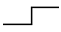
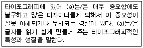

전자출판기능사 (2013-04-14 기출문제)
1과목: 출판론
1. 다음 중 출판물을 기획 편의상으로 나누었을 때 총서에 대한 설명으로 옳은 것은?
- 하나의 주제를 완결하여 한 권 또는 분책하여 내는 출판물
- 소형의 경장본으로 대중보급을 목적으로 하여 염가로 계속해서 내는 출판물
- 하나의 주제를 여러 각도에서 다른 전공자가 저술한 출판물
- 동류의 저작에 대하여 계통을 세워 연대별, 유형별, 사건별, 개인별로 모아내는 출판물
(정답률: 58%)

2. 다음 중 책의 개념에 관한 설명으로 가장 적당하지 않은 것은?
- 내용이 있을 것
- 본문을 보호하는 표지가 있을 것
- 100장 이상의 분량으로 되어 있을 것
- 종이가 떨어져 흩어지지 않게 되어 있을 것
(정답률: 91%)
3. 평판 제판의 빛쬠 작업에서 관원의 거리가 30㎝일 때 10초가 적정노출이라면 광원의 거리를 60㎝로 하면 적정 노출시간은 얼마인가?
- 10초
- 20초
- 40초
- 80초
(정답률: 63%)
4. 다음 중 국배판의 판형 크기를 가장 올바르게 나타낸 것은?
- 1⑤×148㎜
- 148×210㎜
- 188×257㎜
- 210×297㎜
(정답률: 68%)
5. 다음 중 출판의 주요기능을 가장 올바르게 나열한 것은?
- 기록보존, 속보성, 보도, 유통
- 지식전달, 교육, 속보성, 논평
- 기록보존, 문화전달, 교육, 문화창조
- 보도, 논평, 문화창조, 영리추구
(정답률: 84%)
6. 다음 중 제책시 접장이 잘못된 것을 쉽게 알기 하기 위해 접장의 동쪽에 표시한 것은?
- 가늠표
- 등표
- 확인표
- 맞춤표
(정답률: 51%)
7. 다음 중 연속간행물을 개별화시키는 고유번호를 뜻하며, 국제 표준 연속간행물 번호를 나타내는 것은?
- ISSN
- ISBN
- VAN
- POS
(정답률: 65%)
8. 다음 중 다른 판식에 비해 와이프온판의 특징과 가장 거리가 먼 것은?
- 제판처리 가격이 비교적 높다.
- 온·습도의 영향이 적은 편이다.
- 내쇄력이 좋은 편이다.
- 제판 처리가 간단하다.
(정답률: 46%)
9. 평판제판의 일종인 석판석 제판 중 지방산 칼슘과 질산의 혼합반응으로 친수성의 비화선부를 만드는 물질은?
- 잉크
- 비이클
- 아라비아고무액
- 이소프로필렌
(정답률: 60%)
10. 제책 방식 중 인쇄된 내지와 표지를 펼쳐놓고, 등 부분에 2~4곳 정도 철사나 실을 박아 고정시키는 방식을 무엇이라고 하는가?
- 무선철
- 양장
- 반양장
- 중철
(정답률: 73%)
11. 다음 중 출판기획시 출판사가 정가를 책정하는 방법이 아닌 것은?
- 흡수형 정가 책정법
- 프라이스 라인 방법
- 코스트 플러스 방법
- 추종형 정가 책정법
(정답률: 56%)
12. 일반적으로 인쇄의 4방식 중 습수롤러를 주로 사용하는 방식은?
- 평판인쇄
- 오목판인쇄
- 공판인쇄
- 볼록판인쇄
(정답률: 58%)
13. 다음 중 양장 제책에 관한 설명으로 틀린 것은?
- 고급스럽고 보존성이 뛰어나다.
- 책등 부분을 접착제로 고정한다.
- 사전, 장서, 전집 등에 이용된다.
- 제본방식 중 책등이 가장 견고하다.
(정답률: 72%)
14. 다음 중 출판기획 단계에서 반드시 고려해야 할 사항과 가장 거리가 먼 것은?
- 저작권법, 책의 발행 목적, 책의 채산성
- 출판사의 이미지, 거래할 인쇄소, 원고의 표절이나 모방 여부
- 출간시기상의 적절성, 대상 독자의 취향과 수준, 광고선전비
- 전체 제작비와 정가 산정, 저작권 사용료, 원고확보가능성
(정답률: 63%)
15. 다음 중 아동도서 개발에 있어서 유의할 점으로 가장 적절하지 않은 것은?
- 어른의 생각이나 믿음 강요
- 기획의 참신성과 독창성 고려
- 연령층에 따른 심신의 발달 단계 고려
- 그림책에 있어서 문자 배열과 지면 구성에 세심한 주의 필요
(정답률: 86%)
16. 다음 중 독자들에게 시각적인 휴식공간과 편집 면을 지원하는 공간을 무엇이라 하는가?
- 필드(field)
- 여백(margins)
- 단간(alleys)
- 단(column)
(정답률: 83%)
17. 다음 중 책의 본문에서 사진이 하는 역할로 적당하지 않은 것은?
- 본문의 이해를 돕기 위함
- 지면의 빈 공간만을 채우기 위함
- 내용을 구체적으로 시각화시키기 위함
- 독자들이 읽을 기사를 선택하게 하거나 시선을 끌기 위함
(정답률: 83%)
18. 다음 중 사진제판작업 공정에서 반전작업에 관한 설명으로 가장 적절한 것은?
- 사진을 완전 흑화시키는 작업
- 사진에서 불필요한 부분을 제거하는 작업
- 사진을 합성하여 새로운 사진으로 만드는 작업
- 네거티브 필름을 포지티브 필름으로 전환하는 작업
(정답률: 75%)
19. 다음 중 스크린인쇄(screen printing)에 해당하는 것은
- 볼록판 인쇄법(relief printing)
- 평판 인쇄법(lithographic printing)
- 오목판 인쇄법(intaglio printing)
- 공판 인쇄법(stencil printing)
(정답률: 42%)
20. 다음 중 출판물의 입력, 편집, 인쇄 등의 전 과정을 컴퓨터화한 전자편집 시스템을 무엇이라 하는가?
- DTP
- ISO
- RAM
- CRT
(정답률: 80%)
2과목: 전자 출판
21. 다음 중 독자나 주문자가 원하는 내용만을 모아 특별한 책을 제작하여 주는 것을 무엇이라 하는가?
- ROD(Reprinting On Desk)
- COD(Copy On Demand)
- HMP(Hand Made Printing)
- POD(Publishing On Demand)
(정답률: 74%)
22. 다음 중 디지털 이미지의 최소 단위를 의미하는 것은?
- 포인트
- 비트
- 픽셀
- 파이카
(정답률: 82%)
23. 다음 프로그램 중에서 주된 용도가 다른 것은?
- 포토샵
- 문방사우
- 페이지메이커
- 쿽익스프레스
(정답률: 63%)
24. 다음 중 비종이책 전자출판의 가작 적절한 사례는?
- 탁상출판(DTP)
- 이집트의 파피루스
- 광개토대왕 비석 탁본 출판
- 통신망에 연결된 e-book 출판
(정답률: 78%)
25. 다음 e-book의 장점으로 가장 적절한 것은?
- e-book은 재고가 남지 않는다.
- 종이책의 활자보다 읽기에 편하다.
- 고정된 인세율을 적용할 수 있다.
- 철학이나 수학 분야에서 경쟁력을 가진다.
(정답률: 71%)
26. 다음 중 컴퓨터 화면 한 페이지의 레이아웃을 완성하고 그 내용을 모니터로 확인하고 그대로 프린트를 통하여 볼 수 있는 기술은?
- WYSIWYG방식
- ICON방식
- OCR방식
- CTF방식
(정답률: 76%)
27. 다음 중 전자출판의 유형별 종류를 나열한 것으로 틀린 것은?
- 종이출판물 : DTP
- 온라인형 전자출판 : CTS
- 패키지형 전자출판 : DVD-ROM
- 온라인형 전자출판 : 인터넷 전자출판
(정답률: 54%)
28. 다음 중 이미지의 직접 입력장치가 아닌 것은?
- 스캐너
- 아날로그 VCR
- CCD카메라
- 디지털 비디오카메라
(정답률: 74%)
29. 다음 중 전자출판물의 제작과정에 있어 기획단계에서 하는 업무와 가장 거리가 먼 것은?
- 내용의 선정
- 미디어 제작
- 제작일정의 확정
- 제작진의 구성
(정답률: 76%)
30. 다음 중 책의 내용에 저자나 출판사의 정보를 삽입하여 저작권 침해를 막는 기술을 무엇이라 하는가?
- 디지털라이징(Digitalizing)
- 래스터라이즈(Rasterize)
- 워터마킹(Watermarking)
- 인터프리터(Interpreter)
(정답률: 78%)
31. 다음 중 확실한 거리가 재질감, 방향성, 음양의 구조 상태를 느낄 수 있는 지각색에 해당하는 것은?
- 표면색
- 공간색
- 광원색
- 간섭색
(정답률: 57%)
32. 다음 중 그레이 밸런스에 대한 설명으로 옳은 것은?
- 뉴트럴 밸런스 또한 컬러 밸런스라고 한다.
- cyan농도는 yellow나 magenta보다 강하게 해야 한다.
- UCR컨트롤을 사용하여 조정할 수 있다.
- 원고농도와 재현농도와의 관계를 말한다.
(정답률: 57%)
33. 전자출판물에서 내용을 화면 단위로 제시한 것으로 각 화면이 어떻게 구성되고 어떻게 흘러갈 것인지를 모두 기록해 놓은 것을 무엇이라 하는가?
- 스크립트
- 스토리보드
- 텍스트
- 인터페이스
(정답률: 80%)
34. 다음 중 원본에 대한 손상을 방지하기 위한 백업을 받는 방법으로 가장 적절하지 않은 것은?
- 하드디스크에 저장된 파일을 USB와 같은 메모리 장치에 복사하여 백업받는다.
- 사용자의 컴퓨터가 네트워크에 연결되어 있을 경우, 파일을 네트워크의 공유 디스크에 복사하여 백업을 받는다.
- 저장된 파일을 더 작은 용량의 다른 디스크에 복사할 경우는 용량을 많이 차지하는 부분은 삭제한 후 백업받는다.
- 외장 하드와 같은 다른 하드디스크에 복사하여 백업받는다.
(정답률: 77%)
35. 다음 중 전자출판 매개체로 활용되는 CD(Compact Disk)에 관한 설명으로 틀린 것은?
- 몸체는 플라스틱 재질로 구성되어 있어 가볍다.
- 외형적으로는 직경이 약 120㎜의 원반형으로 일부 작은 크기도 있다.
- 데이터는 원형 바깥에서부터 중심부로 기록되도록 되어 있다.
- 디지털 오디오 소스의 하나로서 음성뿐만 아니라 영상도 기록이 가능하다.
(정답률: 73%)
36. 다음 중 인터넷 가상서점에 대한 설명으로 옳지 않은 것은?
- 정보의 접근이 용이하다.
- 보유 도서의 규모를 확대하기에 유리하다.
- 다양한 서적 정보를 쉽게 접할 수 없고 비용이 많이 든다.
- 서적의 판매 행위가 시간적 공간적 제약이 없는 사이버 공간에서 이루어진다.
(정답률: 81%)
37. 다음 중 종이책 출판과 비교하여 전자출판물의 장점으로 볼 수 없는 것은?
- 검색이 용이하다.
- 저장용량에 비해 부피가 작다.
- 쌍방향 커뮤니케이션이 보다 자유롭다.
- 화면을 통해서만 내용을 확인할 수 있다.
(정답률: 64%)
38. 전통적인 출판과정에서 전자출판, 즉 DTP과정으로 변환되는 단계 중 불필요하게 된 작업은?
- 제책작업
- 원고작성
- 사진입력작업
- 대지작업에 따른 편집레이아웃
(정답률: 51%)
39. 다음 중 출판의 구성원과 가장 관계가 적은 것은?
- 기획부
- 제작부
- 대형서점
- 편집부
(정답률: 86%)
40. 다음 중 온라인형 출판의 특징이 아닌 것은?
- 해당 정보를 다운로드 받을 수 있다.
- 정보제공자와 사용자와의 대하가 어렵다.
- 하나의 매체를 다용도로 활용할 수 있다.
- 정보의 수정이나 추가를 신속하게 할 수 있다.
(정답률: 79%)
3과목: 전산 편집
41. 다음 중 편집디자인의 단짜기에 대한 설명으로 옳은 것은?
- 작은 판형에서는 1단으로 편집하는 것이 좋다.
- 단의 변화를 주면 시각의 혼동을 주므로 단의 너비는 항상 같아야 한다.
- 큰 판형에서는 가독성 때문에 단을 나누지 않는다.
- 단짜기 그리드와 상관관계가 없다.
(정답률: 62%)
42. 다음 중 편집기획과정에서 지면을 구성하고 있는 요소에 대한 설명으로 적절하지 않은 것은?
- 제목 : 본문 활자보다 더 크거나 굵은 활자를 사용하되, 작은 제목에서 큰 제목으로 갈수록 글자의 크기를 키우거나 굵은 서체를 사용하는 것이 좋다.
- 면주 : 펼친 면이 어느 제목에 해당하는 부분인가를 알려주기 위한 것으로, 본문과 따로 분리해서 매 페이지마다 일정한 위치에 고정되도록 하는 것이 좋다.
- 페이지 번호 : 시각적인 배려를 하여 본문과 다른 활자를 사용하되, 본문 내용이나 사진, 삽화 등에 따라 페이지마다 서로 다른 위치가 되도록 배치하는 것이 좋다.
- 본문 : 독자의 수준, 판면의 수용 원고량 등을 고려하여 판면 및 서체와 글자의 크기를 선택하되, 가독성을 높이고 책 전체의 통일성을 유지할 수 있도록 하는 것이 좋다.
(정답률: 79%)
43. 다음 중 뉴턴이 빛의 굴절을 이용하여 백색광을 분리시켜 얻은 색띠는?
- 가시광선
- 스펙트럼
- X선
- 적외선
(정답률: 71%)
44. 다음 중 채도에 대한 설명이 올바른 것은?
- 순색 + 흰색 : 명도는 높아지고 채도는 낮아진다.
- 순색 + 흰색 : 명도와 채도가 모두 낮아진다.
- 순색 + 검정 : 명도와 채도가 모두 높아진다.
- 순색 + 검정 : 명도가 낮아지고 채도가 높아진다.
(정답률: 63%)
45. 다음 중 교정쇄의 화상농담, 색, 크기, 농도 등을 원고와 대조하여 수정하는 작업을 무엇이라 하는가?
- 트리밍
- 사진원고 교정
- 러프스케치
- 일러스트레이션
(정답률: 58%)
46. 다음 중 글자의 형태에 있어 장체에 대한 설명으로 옳은 것은?
- 글자의 폭을 좁힌 것이다.
- 글자의 높이를 납작하게 한 것이다.
- 글자의 어깨가 비스듬히 좌측으로 기울어지게 한 것이다.
- 글자의 어깨가 비스듬히 우측으로 기울어지게 한 것이다.
(정답률: 64%)
47. 다음 중 신문 제작시 CTS의 장점에 대한 설명과 가장 거리가 먼 것은?
- 단위공정의 효율성을 최대한 높일 수 있다.
- 숙련도가 낮더라도 작업을 원활히 진행할 수 있다.
- 대량인쇄 시스템을 효과적으로 지원할 수 있다.
- 기사의 입력, 편집, 인쇄를 온라인화 할 수 있다.
(정답률: 73%)
48. 다음 중 고대 이집트에서 개발되어 필기용 재료로서 오늘날의 종이처럼 사용한 것은?
- 죽간
- 금석
- 파피루스
- 양피지
(정답률: 82%)
49. 마진(Margin)과 판면에 대한 설명으로 가장 거리가 먼 것은?
- 마진과 판면은 같은 출판물 한 페이지 내에 글자가 인쇄되어 있는 면을 말한다.
- 판면 안의 글자들은 마진에 의해 통합성을 높이게 된다.
- 책을 읽기 위해 책을 잡은 손이 본문 글자를 가리지 않도록 마진을 두어야 한다.
- 마진은 제책 및 재단 과정 중 글자가 잘려 나가는 것을 방지한다.
(정답률: 59%)
50. 다음 중 인쇄물 제작시 종이에 대한 설명으로 틀린 것은?
- 종이는 낱장(sheet)과 두루마리(roll)가 있다.
- 두루마리는 윤전 인쇄에 사용하기 위해 축에 감은 종이 이다.
- 낱장은 연(ream)을 단위로 유통되고, 원칙적으로 1연은 1000장을 기준으로 한다.
- 연(ream)은 간단히 R이라 표기하고, 매수를 S로 표기할 때 10연 250매를 10R 250S로 나타낸다.
(정답률: 64%)
51. 다음 중 스캔 받은 이미지에서 필요한 부분만 남기고 나머지 부분을 잘라 버리는 것을 무엇이라 하는가?
- 크로핑(cropping)
- 디스페클(despeckle)
- 샤픈(sharpen)
- 에디트(edit)
(정답률: 74%)
52. 인쇄 출판물의 크기를 구별하는 단위를 판형이라고 한다. 국판 전지 사이즈로 옳은 것은?
- 1090×788㎜
- 1085×765㎜
- 1030×728㎜
- 939×636㎜
(정답률: 50%)
53. 다음의 교정기호가 의미하는 것은?

- 문장 부호를 수정하시오.
- 행을 오른쪽으로 이동하시오.
- 행을 이으시오.
- 행을 바꾸시오.
(정답률: 72%)
54. 다음 중 원고와 대조하면서 문자, 기호, 사진, 그림, 색, 선 등에서 원고와 다르거나 지정한 대로 되어 있지 않은 것을 골라내어 바로잡는 것을 무엇이라 하는가?
- 제판
- 교정
- 재배치
- 레이아웃
(정답률: 72%)
55. 다음 설명 중 (a)에 들어갈 말로 가장 적당한 것은?

- 전달성
- 가독성
- 그리드
- 레이아웃
(정답률: 79%)
56. 다음 중 빛에 의한 TV의 가법혼색은?
- 맥스웰의 혼색
- 계시 가법 혼색
- 병치 혼색
- 회전 혼색
(정답률: 66%)
57. 레이아웃을 할 때 그림 요소와 글자 요소 등의 내용을 잘 이해한 다음 구상해야 좋은 구성이 된다. 다음 중 사진의 크기나 강조할 부분을 정하여 디자이너의 뜻을 표현하는 구체적인 작업을 무엇이라고 하는가?
- 수량
- 방향
- 비율
- 트리밍
(정답률: 68%)
58. 다음 중 색의 어둡고 밝은 정도를 나타내는 용어는?
- 색상
- 채도
- 명도
- 색채
(정답률: 79%)
59. 다음 중 가장 정교한 색상표현과 높은 해상도의 인쇄가 요구되는 경우는?
- 신문
- 흑백 단행본 본문
- 소설책
- 고급 상품 카탈로그
(정답률: 83%)
60. 국전지를 8절로 잘라 만든 책으로 대부분 단행본보다는 디자인 계통의 잡지를 비롯하여 각종 여성 종합지, 전문 잡지 등에 많이 사용되는 규격은?
- 국배판형
- 4·6배판형
- 타블로이드판형
- 변형재단판형
(정답률: 48%)